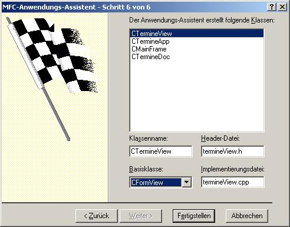
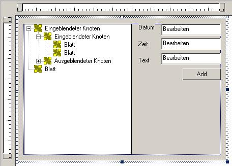
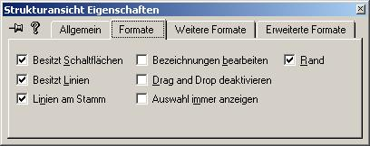
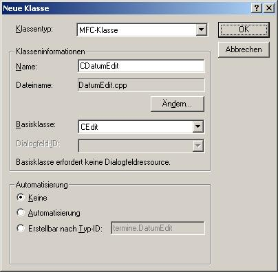
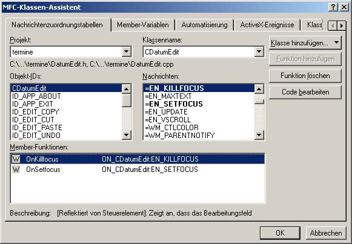
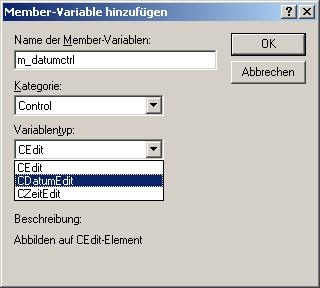
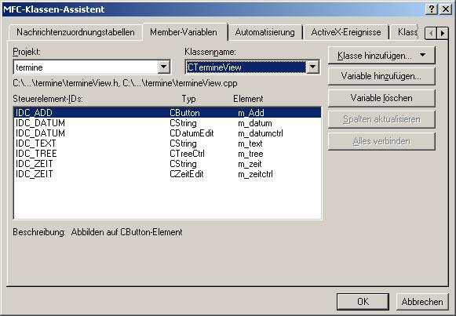
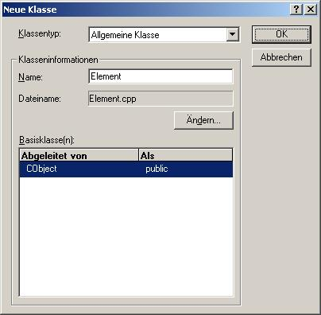
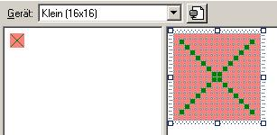

- Zuerst einmal ein neues Projekt anlegen:
- Schritt 1 : SDI - Anwendung
- Schritt 6 : CFormView

- Zeichnen des Dialogs:

Um im CTreeCtrl die verbindenden Linien und die Symbole + und - zum Öffnen und Schließen eines Asts des Baumes müssen nur in den Eigenschaften des CTreeCtrls folgende Formate angekreuzt werden:

- Noch bevor man die Membervariablen für die Dialogelemente anlegt, müssen die speziellen Eingabefelder, die nur entweder ein Datum oder eine Zeit eingeben lassen erstellt werden. Dazu werden 2 neue Klassen erstellt, die von CEdit abgeleitet werden.
- Menü Einfügen -> Neue Klasse..

- Zu dieser Klasse werden nun Überprüfungen hinzugefügt, die prüfen, ob der eingegebene String ein Datum ist.
Ich habe ihr dazu eine Methode hinzugefügt, die die Richtigkeit des Datums prüft. Sie könnte vielleicht noch verbessert werden, reicht aber im Moment vollkommen aus.
bool CDatumEdit::isContentValid()
{
// Diese Methode prüft, ob der eingebebene
// String in ein gültiges Datum ist
CString str;
int jahr,monat,tag;
// Holen des eingegebenen Textes
GetWindowText(str);
// Besteht er aus 3 Elementen und ist er durch Punkte getrennt ?
if (sscanf(str,"%d.%d.%d",&tag,&monat,&jahr) != 3)
return false;
// Ist der Tag eine Zahl von 1 bis 31 ?
if ((tag < 1)||(tag > 31))
return false;
// Ist das Monat eine Zahl von 1 bis 12 ?
if ((monat < 1)||(monat > 12))
return false;
// Ist das Jahr eine Zahl von 1995 bis 2010
if ((jahr < 1995)||(jahr > 2010))
return false;
// Es passt alles
return true;
}
- Überschreiben der Methoden für Bekommen und Verlieren des Fokus des Eingabefeldes

void CDatumEdit::OnSetfocus()
{
// Beim Betreten des Dialogfeldes den alten Text merken
GetWindowText(oldText);
}
void CDatumEdit::OnKillfocus()
{
// Ist der neue Text kein Datum ...
if (!isContentValid())
{
//MessageBox("Sie müssen ein Datum in der Form TT.MM.JJJJ eingeben.",NULL,MB_OK|MB_ICONSTOP);
// .. dann alten wieder setzen
SetWindowText(oldText);
}
}
- Für das Eingabefeld für Zeit muss das gleiche noch einmal getan werden. Anders ist nur die Prüfroutine:
bool CZeitEdit::isContentValid()
{
// Diese Methode prüft, ob der eingebebene
// String in eine gültige Zeit ist
CString str;
int stunde,minute;
// Holen des eingegebenen Textes
GetWindowText(str);
// Besteht er aus 2 Elementen und ist er durch Doppelpunkt getrennt ?
if (sscanf(str,"%02d:%02d",&stunde,&minute) != 2)
return false;
// Ist die Stunde eine Zahl von 0 bis 23 ?
if ((stunde < 0)||(stunde > 23))
return false;
// Ist die Minute eine Zahl von 0 bis 59 ?
if ((minute < 0)||(minute > 59))
return false;
// Es passt alles
return true;
}
- Man könnte die Nachrichten SetFokus und Killfokus der Eingabefelder auch direkt ohne zusätzliches Anlegen einer Klasse für Datum und Zeit abfangen, aber ich wollte hier zeigen, wie man Steuerelementklassen überschreibt. Man kann dadurch das Steuerelement mit der speziellen Funktionalität wiederverwendbar machen, um nicht jedes Mal wieder die Funktionalität einbauen zu müssen.
- Nun können die Membervariablen für die Elemente des Dialogs angelegt werden:
Dazu müssen noch die Klassen für die speziellen Eingabefelder in die View inkludiert werden:
termineView.h
#include "DatumEdit.h"
#include "ZeitEdit.h"

Ich lege die Controlvariablen für das Datums- und das Zeiteingabefeld nur deshalb zusätzlich zu den Wertvariablen an, weil sonst Windows nicht weiß, dass es das spezielle Eingabefeld nutzen soll. Ich brauche sie sonst im ganzen Programm nicht mehr.

- Weil ich gern möchte, dass der Add Button nur dann aktiv ist, wenn die beiden Datums- und Zeiteingabefeldern gültige Werte enthalten, überschreibe ich 2 Methoden von termineView. Es sind jeweils Handler für die Nachricht EN_CHANGE der jeweiligen Eingabefelder.
void CTermineView::OnChangeDatum()
{
// Sind die Inhalte der Eingabefelder gültig ?
if (m_datumctrl.isContentValid() && m_zeitctrl.isContentValid())
// Aktiviere Button
m_Add.EnableWindow(true);
else
// Deaktiviere Button
m_Add.EnableWindow(false);
}
void CTermineView::OnChangeZeit()
{
// Sind die Inhalte der Eingabefelder gültig ?
if (m_datumctrl.isContentValid() && m_zeitctrl.isContentValid())
// Aktiviere Button
m_Add.EnableWindow(true);
else
// Deaktiviere Button
m_Add.EnableWindow(false);
}
Der Button muss zu Anfang des Programms deaktiviert sein. Dies kann in der Methode OnInitialUpdate der Klasser der View erreicht werden.
void CTermineView::OnInitialUpdate()
{
CFormView::OnInitialUpdate();
GetParentFrame()->RecalcLayout();
ResizeParentToFit();
// Button am Anfang deaktivieren
m_Add.EnableWindow(false);
}
- Nun erstellt man am Besten gleich die Klasse, in der man einen Termin speichern kann und die man auch gleich serialisieren kann.
- -> Einfügen -> Neue Klasse ...

- Diese Membervariable zur Klasse hinzufügen:
CString Text;
int stunde,minute;
int jahr,monat,tag;
- Die Methode void Serialize(CArchive &ar) zur Klasse hinzufügen
void Element::Serialize(CArchive &ar)
{
if (ar.IsStoring())
{
ar << jahr << monat << tag << stunde << minute << Text;
}else
{
ar >> jahr >> monat >> tag >> stunde >> minute >> Text;
}
}
- Hinzufügen der Makros DECLARE_SERIAL(Element) zur Datei Element.h
und IMPLEMENT_SERIAL(Element,CObject,1) zur Datei Element.cpp
class Element : public CObject
{
public:
DECLARE_SERIAL(Element)
void Serialize(CArchive &ar);
Element();
virtual ~Element();
CString Text;
int stunde,minute;
int jahr,monat,tag;
};
- Inkludieren der Klasse Element in die Datei CTermineView
- Hinzufügen der Variable 'CObList list' zur Klasse CTermineDoc
- Nun noch die CObList serialisieren:
void CTermineDoc::Serialize(CArchive& ar)
{
list.Serialize(ar);
if (ar.IsStoring())
{
// ZU ERLEDIGEN: Hier Code zum Speichern einfügen
}
else
{
// ZU ERLEDIGEN: Hier Code zum Laden einfügen
}
}
- Nun muss der Termin noch zum CTreeCtrl hinzugefügt werden. Da man aber bei jedem Einfügevorgang eines jeden einzelnen Items in das CListCtrl prüfen müsste, ob es das Element schon gibt, habe ich mir eine Methode geschrieben, die nach einem child mit dem angegebenen text von den angegebenen parent sucht. Wird es gefunden, kann man es einfach zurückgeben. Wenn nicht, erstelle ich es und gebe dann das neue Item zurück.
CTermineView.cpp
HTREEITEM CTermineView::getItem(CString text, HTREEITEM parent)
{
// Diese Methode sucht nach einem Child des übergebenen Parent, das
// als angezeigten Namen text besitzt. Wenn es das Item findet wir es zurück
// gegeben. Sonst wird es neu angelegt.
// Die Methode dient dazu, zu verhindern dass Einträge, wie zb ein Jahr
// oder ein Monat etc. doppelt vorhanden sind.
// Hole erstes Child
HTREEITEM child = m_tree.GetChildItem(parent);
// Solange Child nicht gefunden wurde..
while (child != NULL)
{
// Ist es das gesuchte Item ?
if (m_tree.GetItemText(child) == text)
// Ja, dann zurückgeben
return child;
// Nächstes Child vom übergebenen parent holen,
// also Bruderelement von child.
child = m_tree.GetNextSiblingItem(child);
}
// Child nicht gefunden, also neu erstellen
child = m_tree.InsertItem(text,0,0,parent);
// lparam des Childs auf NULL setzen.
m_tree.SetItemData(child,(DWORD) NULL);
// Neues Child zurückgeben
return child;
}
- Es folgt eine Methode, die einen gesamten Termin mittels der Methode getItem in CTreeCtrl einfügt.
void CTermineView::AddTermin(int jahr, int monat, int tag, int stunde, int minute, CString text,DWORD data,bool show)
{
// Diese Methode fügt einen Eintrag zum CTreeCtrl hinzu
CString zwsp;
// Zahl in String umwandeln
zwsp.Format("%4d",jahr);
// Element als Rootelement einfügen und merken
// TVI_ROOT .. Als Rootelement einfügen
HTREEITEM hjahr = getItem(zwsp,TVI_ROOT);
zwsp.Format("%2d",monat);
// als Child von hjahr einfügen
HTREEITEM hmonat = getItem(zwsp,hjahr);
zwsp.Format("%2d",tag);
HTREEITEM htag = getItem(zwsp,hmonat);
zwsp.Format("%2d",stunde);
HTREEITEM hstunde = getItem(zwsp,htag);
zwsp.Format("%2d",minute);
HTREEITEM hminute = getItem(zwsp,hstunde);
HTREEITEM htext = m_tree.InsertItem(text,0,0,hminute);
// im Datenfeld von htext, das bei jedem Item dazu gespeichert werden kann, die Adresse
// des Elements in der CObList merken.
m_tree.SetItemData(htext,(DWORD) data);
// Wenn es sichtbar werden soll..
if (show)
// .. dann anzeigen
m_tree.EnsureVisible(htext);
}
- Nun kann man den Handler für den Button Add schreiben:
void CTermineView::OnAdd()
{
// Dokument holen
CTermineDoc * doc = GetDocument();
// Neues Element für Termin erstellen
Element *elem = new Element();
// Einfügen in die Liste
// Holen der Daten der Dialogelemente in die Membervariable
UpdateData();
// Die Strings zerlegen, und in das neue Element schreiben
// Richtigkeit wird schon in den Eingabefeldern geprüft
sscanf(m_datum,"%2d.%2d.%4d",&elem->tag,&elem->monat,&elem->jahr);
sscanf(m_zeit,"%2d:%2d",&elem->stunde,&elem->minute);
elem->Text = m_text;
// Zur CObList hinzufügen
doc->list.AddTail(elem);
// Einfügen in den Dialog
AddTermin(elem->jahr,elem->monat,elem->tag,elem->stunde,elem->minute,elem->Text,(DWORD)elem,true);
}
- Bei Klick auf den Beschreibungstext eines Termins im CTreeCtrl soll er die Daten in den Eingabefeldern anzeigen. Dazu muss nur der Handler für das Ändern der Auswahl der CTreeCtrl überschrieben werden.
Ich wollte zuerst, den Handler On_Click verwenden, doch konnte man mit den Parametern, die diesem Handler von Windows übergeben nichts anfangen.
Die Nachricht, für die der Handler geschrieben werden soll heißt TVN_SELCHANGED.
void CTermineView::OnSelchangedTree(NMHDR* pNMHDR, LRESULT* pResult)
{
// Angeklicktes Item
NM_TREEVIEW* item = (NM_TREEVIEW*) pNMHDR;
// Existiert Item..
if (item->itemNew.hItem != NULL)
{
// Ist es das Element, das den Beschreibungstext enthält..
// Beim Hinzufügen eines Termins zu CTreeCtrl habe ich mir mit
// SetItemData den Wert von lParam gesetzt, aber nur beim Item,
// das den Beschreibungstext enthält.
if (item->itemNew.lParam != NULL)
{
CString zwsp;
// Zugehöriges Element holen
Element* elem = (Element*)item->itemNew.lParam;
// Variable der Dialogelemente setzen
m_text = elem->Text;
// String Datum aus den Einzelkomponenten zusammenstellen
zwsp.Format("%02d.%02d.%04d",elem->tag,elem->monat,elem->jahr);
m_datum = zwsp;
// String Zeit aus den Einzelkomponenten zusammenstellen
zwsp.Format("%02d:%02d",elem->stunde,elem->minute);
m_zeit = zwsp;
// Variable anzeigen
UpdateData(false);
}
}
*pResult = 0;
}
- Bei jedem Laden, müssen die Termin in die CTreeCtrl eingetragen werden.
void CTermineView::OnInitialUpdate()
{
CFormView::OnInitialUpdate();
GetParentFrame()->RecalcLayout();
ResizeParentToFit();
// Einfügen der Elemente in der CObjectList in das CTreeCtrl
// Wird beim Starten des Programms und beim Laden aufgerufen
CTermineDoc * doc = GetDocument();
Element *elem;
POSITION pos = doc->list.GetHeadPosition();
// Alle Elemente der CTreeCtrl löschen
m_tree.DeleteAllItems();
// Hinzufügen der geladenen Elemente in der CObList zum CTreeCtrl
while (pos != NULL)
{
elem = (Element*)doc->list.GetNext(pos);
AddTermin(elem->jahr,elem->monat,elem->tag,elem->stunde,elem->minute,elem->Text,(DWORD)elem,false);
}
// Button am Anfang deaktivieren
m_Add.EnableWindow(false);
}
- Es fehlen noch die Bildchen vor den Einträgen der Termine:
- Variable 'CImageList imagelist' zur Klasse CTermineView hinzufügen
- Icon zeichnen

- Initialisierungscode hinzufügen
void CTermineView::OnInitialUpdate()
{
CFormView::OnInitialUpdate();
GetParentFrame()->RecalcLayout();
ResizeParentToFit();
// Nur beim Programmstart Icons laden
// Nach einem Aufruf von Create von CImageList, ist
// GetSafeHandle() != NULL.
if (imagelist.GetSafeHandle() == NULL)
{
// ImageList erstellen
imagelist.Create(/*Breite:*/16,/*Höhe:*/16,0,1,1);
// Icon laden und zur CImageList hinzufügen
imagelist.Add(AfxGetApp()->LoadIcon(IDI_ICON1));
// Setzen der CImageList des CTreeCtrl
m_tree.SetImageList(&imagelist,TVSIL_NORMAL);
}
// Einfügen der Elemente in der CObjectList in das CTreeCtrl
// Wird beim Starten des Programms und beim Laden aufgerufen
CTermineDoc * doc = GetDocument();
Element *elem;
POSITION pos = doc->list.GetHeadPosition();
// Alle Elemente der CTreeCtrl löschen
m_tree.DeleteAllItems();
// Hinzufügen der geladenen Elemente in der CObList zum CTreeCtrl
while (pos != NULL)
{
elem = (Element*)doc->list.GetNext(pos);
AddTermin(elem->jahr,elem->monat,elem->tag,elem->stunde,elem->minute,elem->Text,(DWORD)elem,false);
}
// Button am Anfang deaktivieren
m_Add.EnableWindow(false);
}
- Fertig